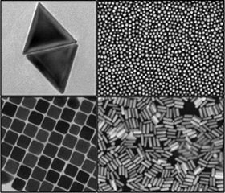
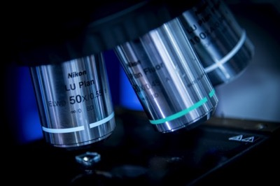

研究兴趣方向
纳米科学 - 纳米颗粒
合成, 组装, 表征, 应用
纳米颗粒的合成与表面改性
 纳米晶体，通常是指那些由数百或数千个原子构成的非常小的晶体颗粒，尺寸范围为1-100纳米。 绝大部分纳米晶体都表现出不寻常的、颗粒尺寸大小相关的变化的光学、发光、磁性和电子特性。 纳米晶体在我们日常生活的方方面面得到广泛的应用，例如：彩色显示、药物靶向输送、 太阳能电池、快速生物检测等。纳米晶体的这些特性都高度依赖于纳米晶体的种类（如金、银、二氧化硅等）、 尺寸（纳米级单分散性）、形状（三角形、球形、立方体、棒状等）、表面特性（核壳结构、配体分子等）等等。 为了在实际应用中充分实现这些出色的性质，目前科学界最大的研究领域之一就是探索在溶液中合成具有可控形态、 高单分散性和可控表面功能化的纳米晶体的方法。 (图：具有不同形状的金纳米晶体。版权所有。)
纳米颗粒的“直接组装法“和微纳加工
 现代纳米科学和纳米技术的发展中，最大挑战之一是如何将化学合成的纳米晶体有效地从液相转移到固相表面。
换句话说，想要将纳米晶体的各种优异性质运用到实际生活中，不可避免的需要将在溶液中合成的纳米晶体
高效的制备成为能够实际应用的器件。为了更好地控制形貌和大批量生产，大多数纳米晶体都是在溶液中合成的
然而，拿一小瓶液体来日常使用是不切实际的。虽然，纳米晶体溶液可以很容易地通过滴注或旋涂的方法转移到固体基底表面。
但这些方法往往会导致纳米晶体在基底表面的团聚和无序。这在某种程度上屏蔽了大部分的纳米晶体的固有特性。
所以我们需要开发一种高效的方法将纳米晶体从溶液中可控的组装到基底表面并形成特定的排列或图案。
这样才可以最大限度地实现纳米晶体在基底表面上的应用潜力。“直接组装法”是在不改变其固有特性的情况下，
将合成的纳米晶体直接组装在预先设计好的基底表面，以形成所需要的高级纳米结构。为了成功的实现纳米晶体的“直接组装”，
其关键因素是应用一个适当的外部驱动力，将纳米晶体推或拖到基底上的特定位置。
(图：改编自10.1002/adma.201904551。版权所有。)
现代纳米科学和纳米技术的发展中，最大挑战之一是如何将化学合成的纳米晶体有效地从液相转移到固相表面。
换句话说，想要将纳米晶体的各种优异性质运用到实际生活中，不可避免的需要将在溶液中合成的纳米晶体
高效的制备成为能够实际应用的器件。为了更好地控制形貌和大批量生产，大多数纳米晶体都是在溶液中合成的
然而，拿一小瓶液体来日常使用是不切实际的。虽然，纳米晶体溶液可以很容易地通过滴注或旋涂的方法转移到固体基底表面。
但这些方法往往会导致纳米晶体在基底表面的团聚和无序。这在某种程度上屏蔽了大部分的纳米晶体的固有特性。
所以我们需要开发一种高效的方法将纳米晶体从溶液中可控的组装到基底表面并形成特定的排列或图案。
这样才可以最大限度地实现纳米晶体在基底表面上的应用潜力。“直接组装法”是在不改变其固有特性的情况下，
将合成的纳米晶体直接组装在预先设计好的基底表面，以形成所需要的高级纳米结构。为了成功的实现纳米晶体的“直接组装”，
其关键因素是应用一个适当的外部驱动力，将纳米晶体推或拖到基底上的特定位置。
(图：改编自10.1002/adma.201904551。版权所有。)
纳米晶体的光学与电学性质
 纳米晶体的尺寸相关的光学和电学特性在漫长的人类历史中吸引了大量的关注。例如，在教堂中广泛使用的彩色玻璃就
归功于玻璃和金属纳米颗粒的混合。纳米晶体的加入使原本无色的玻璃变得颜色鲜艳，但仍保持其透明度。
现在最新的QLED电视也是在大量的科研基础上，从量子点纳米晶体的电致荧光特性中演化而来。
由于量子的能够在电子的激发下发射出高度单一、纯净的单色光，所以OLED电视所呈现的色彩更为鲜艳，对比度更高。
目前，而且研究人员已经能够通过选择性地合成具有特定形貌的纳米晶体来调整其光学和电学特性。
纳米晶体的光学和电学特性已被广泛用于许多领域，如文件防伪、彩色显示器、生物标记和传感等。
因此，对纳米晶体的光学和电学特性进行更为深入研究和认识可以更好的促进其在实际生活中各个方面的应用。
我所感兴趣的研究方向主要有：纳米晶体的等离子光学效应，半导体纳米晶体的量子尺寸效应等。
（图：基于CdSe的量子点。版权所有。）
纳米晶体的尺寸相关的光学和电学特性在漫长的人类历史中吸引了大量的关注。例如，在教堂中广泛使用的彩色玻璃就
归功于玻璃和金属纳米颗粒的混合。纳米晶体的加入使原本无色的玻璃变得颜色鲜艳，但仍保持其透明度。
现在最新的QLED电视也是在大量的科研基础上，从量子点纳米晶体的电致荧光特性中演化而来。
由于量子的能够在电子的激发下发射出高度单一、纯净的单色光，所以OLED电视所呈现的色彩更为鲜艳，对比度更高。
目前，而且研究人员已经能够通过选择性地合成具有特定形貌的纳米晶体来调整其光学和电学特性。
纳米晶体的光学和电学特性已被广泛用于许多领域，如文件防伪、彩色显示器、生物标记和传感等。
因此，对纳米晶体的光学和电学特性进行更为深入研究和认识可以更好的促进其在实际生活中各个方面的应用。
我所感兴趣的研究方向主要有：纳米晶体的等离子光学效应，半导体纳米晶体的量子尺寸效应等。
（图：基于CdSe的量子点。版权所有。）
单颗粒光谱
 As well known, the outstanding properties of nanocrystals are highly dependented to their size and shape. One of the big challenge in nanocrystals research is how to study the relation between morphology of the nanocrystals and their properties. One inevitable fact is that it is nearly impossible to control all nanocrystals with absolutely identical morphology with current synthesis technique. Therefroe, the results of common characterisation can only represent the ensemble property of all nanocrystal with minor differece. In order to have a more sophisticated understanding, it is necessary to isolate the distraction and only study one selected nanocrystal to link its unique morphology and property. It terms of optical properties, I use advanced optical microscopy, such as dark field microscopy, wild field microscopy, confocal microscopy etc., to study single nanocrystal. (Figure: Nikon Dark Field Microscope. Copy right reserved.)
Numercial Modeling and Simulation
 The numercial modelling and simulation is one very powerful tool to study the properties of nanocrystals.
Theorical simulation and practical experiment can support each other during reserach.
On one hand, with known facts of practical experiment, we can compare results with numercial model to support the
reliability of the simulation. On the other hand, by tunning the parameters in numercial model, the simulation results
can be used to predict and guide our practical experiment. In addition, in combine with the classic theory, the
numercial simulation can be used to support and explan phenomenon performed from nanocrystals or nanocrystal based devices.
COMSOL Multiphysics is the simulation software that I mainly used. Key Physics: Optics, AC/DC, Heat Transfer and Structural Mechanics.
(Figure: Electric field distribution on gold nanorod under light illumination. Copy right reserved.)
The numercial modelling and simulation is one very powerful tool to study the properties of nanocrystals.
Theorical simulation and practical experiment can support each other during reserach.
On one hand, with known facts of practical experiment, we can compare results with numercial model to support the
reliability of the simulation. On the other hand, by tunning the parameters in numercial model, the simulation results
can be used to predict and guide our practical experiment. In addition, in combine with the classic theory, the
numercial simulation can be used to support and explan phenomenon performed from nanocrystals or nanocrystal based devices.
COMSOL Multiphysics is the simulation software that I mainly used. Key Physics: Optics, AC/DC, Heat Transfer and Structural Mechanics.
(Figure: Electric field distribution on gold nanorod under light illumination. Copy right reserved.)
Nanocrystals Device and Application
 The thrive of technoloy is supported by the growth of science, and science is flourishing credited to realisation of the technology it supports.
It is also very important in nanoscience to convert those excellcent properities of nanocrystals into devices for practical applicaiton in common.
For the nanoscience I am interested in, I devote to explore the possibilities to transfer the fundmental research into a prototype device or proof
of concepts for certain application. For example, by sophistically designing the structure, a pattern that constructed by arrays of gold or sliver
nanocrystals can be adapted for advnaced security features for anti-counterfeiting. The An array of dense fluorescent quantum dots can be used
to develop the high resolution and high fidelity colour displays. (Figure: Array of gold nanorod illuminated by LED and exhibit rainbow colours.)
The thrive of technoloy is supported by the growth of science, and science is flourishing credited to realisation of the technology it supports.
It is also very important in nanoscience to convert those excellcent properities of nanocrystals into devices for practical applicaiton in common.
For the nanoscience I am interested in, I devote to explore the possibilities to transfer the fundmental research into a prototype device or proof
of concepts for certain application. For example, by sophistically designing the structure, a pattern that constructed by arrays of gold or sliver
nanocrystals can be adapted for advnaced security features for anti-counterfeiting. The An array of dense fluorescent quantum dots can be used
to develop the high resolution and high fidelity colour displays. (Figure: Array of gold nanorod illuminated by LED and exhibit rainbow colours.)